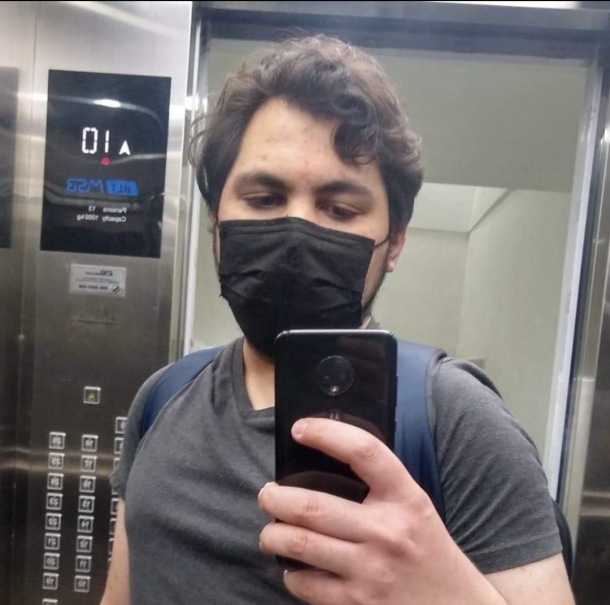

Daniel Flores
Universidad Autónoma de Nuevo León | August 2017 - December 2022
Currently studying software engineering at Facultad de Ingeniería Mecánica Eléctrica.
Technologies
Experience
Handcloud | April 2021 - June 2021
Worked in writing JavaScript plugins for their ServiceNow platform.
KIA Motors Mexico | February 2022 - Today
Assisted in updating and modifying backend code for their .NET MVC applications. Used vanilla JavaScript for their frontend code.
Contact
E-mail: josedanielsaldana@gmail.com
Phone: +52 1 81 2146 5119